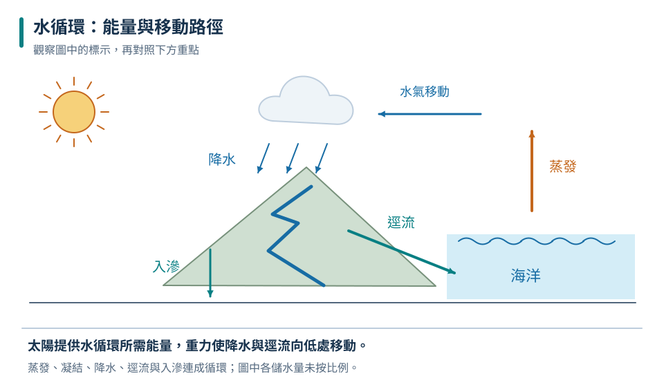

水的儲存與移動
海洋是最大的水庫；一次循環沒有固定起點，也不一定經過所有環節。
九上 · 地科 · 第 5 章
打開水龍頭的一杯水，可能曾在海洋、雲或岩石孔隙裡停留。這章從水的分布與循環出發，辨認礦物和岩石，再沿河流觀察風化、侵蝕與沉積。你會利用表格和對照實驗，說明地表為何持續改變，也判斷人類用水如何影響環境。
先備概念：蒸發與凝結是物理變化、密度與重力的基本概念、能讀取比例與簡單表格
LEARN & EXPLAIN
地球表面雖然大部分被海洋覆蓋，但海水含有較多鹽類，不能直接當成一般飲用水。淡水只占全部水量的小部分，其中很多儲存在冰雪或地下；河川與淡水湖泊所占比例更小。「有很多水」和「附近有可直接使用的淡水」是不同問題。
太陽提供蒸發所需的能量，水蒸氣冷卻可凝結成雲滴；降水到地面後，一部分形成逕流，一部分入滲，再經地下水流回河海。重力驅動降水與水往低處流。地下水多存在岩石與土壤的連通孔隙或裂隙中；補注若長期少於抽取，水位就會下降。
海洋是最大的水庫；一次循環沒有固定起點，也不一定經過所有環節。
有空間可以存水，還要有連通通道才能容易出水。黏土有孔隙卻常不易透水。
同一範圍內，儲水量改變＝流入量－流出量；比較時要用相同期間與單位。

箭頭表示水的移動，並非每滴水都走同一條路；地下水不是普遍存在的地下大河。
地下水儲量減少 45 單位；水循環持續進行不代表可以無限制抽取。
水是可循環的資源，但地下水補注可能很慢，污染也不會在一次循環後自動消失。
LEARN & EXPLAIN
礦物是自然形成、具有一定化學成分範圍與結晶構造的固體；岩石通常由一種或多種礦物組成。鑑定礦物時要綜合硬度、條痕、光澤、解理等性質，不能只靠顏色。例如同種礦物可能因微量成分不同而呈現不同顏色。硬度比較的是抗刮能力，不是抗敲碎能力。
火成岩來自岩漿或熔岩冷卻；冷卻較慢時，晶體通常有較多時間長大。沉積岩常由碎屑堆積後壓密、膠結，也可能由化學沉澱或生物材料形成。變質岩則是既有岩石在未整體熔融下，受高溫、壓力等影響改變。三大岩類能互相轉變，名稱表示形成過程，不表示固定的外觀或用途。
花岡岩常見較粗晶粒；玄武岩常見細晶粒。判斷仍需結合產狀與組成。
砂岩由砂粒膠結；石灰岩常含碳酸鈣，可能保存化石。
石灰岩可變成大理岩；頁岩可變成板岩，過程沒有先完全熔成岩漿。
「熔融後再冷卻」會形成火成岩，不能只因受熱就判為變質岩。
甲較支持地下緩慢冷卻形成的火成岩；仍需更多觀察確認岩名。
岩石不是只會依「火成岩→沉積岩→變質岩」單一路線循環；任何岩石都可能風化或熔融。
LEARN & EXPLAIN
風化是岩石在原地破碎或成分改變。溫差、結冰膨脹與根系生長可造成物理風化；礦物與水、氧或酸反應則可能造成化學風化。侵蝕把物質從原處移除，搬運把它帶走，沉積則是物質停留下來。這些過程可以連續發生，但要用「是否移動、成分是否改變」來分辨。
流水流速、流量、坡度與顆粒性質共同影響侵蝕和搬運。在常見河道中，流速下降時較粗顆粒往往先沉積，細顆粒能繼續被帶走；黏土的凝聚等效應會讓細節更複雜。彎曲河道常在外側較強侵蝕、內側較易沉積。植被能攔截雨滴、減緩地表水流並固定部分土壤，但不能保證任何暴雨都不會崩塌。
岩石原地裂開是風化；碎屑被河水帶離原處才涉及侵蝕與搬運。
以粒徑、密度相近條件比較，水流減弱通常先留下較難搬動的大顆粒。
河流、海浪、風、冰與重力都能改造地表；人類工程也會改變物質收支。
| 同一河槽流速 | 粗砂 | 細砂 |
|---|---|---|
| 快 | 持續移動 | 持續移動 |
| 中 | 多數停下 | 持續移動 |
| 慢 | 停下 | 多數停下 |
教學模型資料；只比較這批同密度砂粒，不作為天然河川的通用門檻。
在此實驗條件下，草皮減少泥沙流失；宜重複實驗確認。
海灘有沙不代表它只會增加；若上游來沙減少或沿岸搬運增強，海灘也可能退縮。
TRY, OBSERVE, EXPLAIN
REVIEW
海洋是最大的水庫；一次循環沒有固定起點，也不一定經過所有環節。
回到這一節複習花岡岩常見較粗晶粒；玄武岩常見細晶粒。判斷仍需結合產狀與組成。
回到這一節複習岩石原地裂開是風化；碎屑被河水帶離原處才涉及侵蝕與搬運。
回到這一節複習CHAPTER TEST
先獨立作答，再看解析。中難與難為編者估計，尚未經學生實測校準。